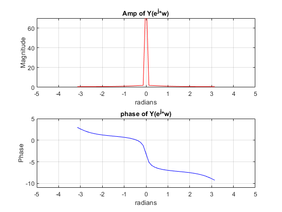
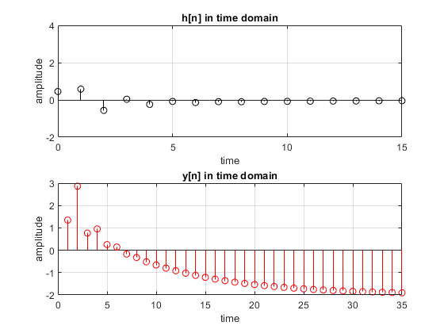
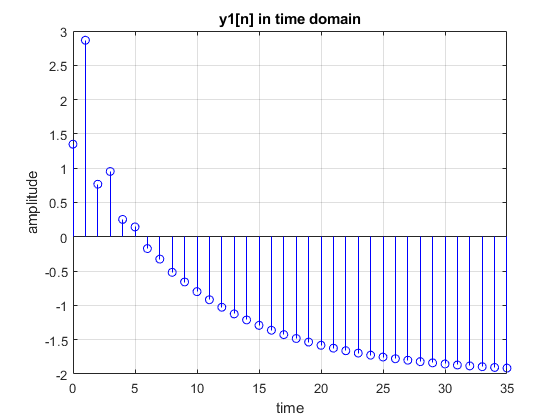
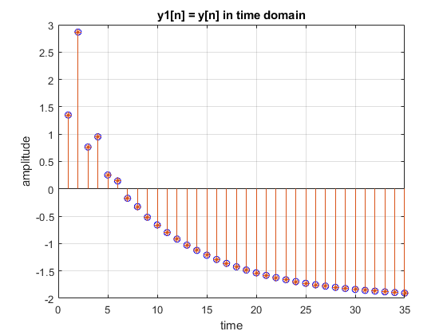
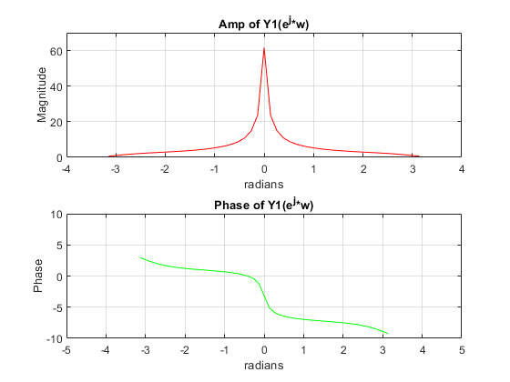

Digital Signal Processing MATLAB HW - q2
Professor: Dr. Sheikhzadeh Author: [SeyedAli] - [SeyedHosseini] E-mail: [alisnake@aut.ac.ir] %which I`m about to change ASAP University: Amirkabir University of Technology
Contents
Clear recent data
clear; close all; clc;
Verifying Variables
clc; n = 0 : 1 : 48; % time defenition x = 2 + (0.5).^n; % x(n) = [2 + (0.5)^n]*u(n) b = [0.45 0.4 -1]; %y(n)− 0.4y(n−1)− 0.45y(n−2) a = [1 -0.4 -0.45]; %0.45x(n)+ 0.4x(n−1)− x(n−2) %To compute and plot impulse response, MATLAB provides the function impz. When invoked by h = impz(b,a,n); h = h'; %now h is a row of numbers w = -pi : pi/24 : pi; %vector of frequencies
Part A finding and plotting Y(jw)
clc; X = fftshift(fft(x)); %creating zero phase fft of x(n) H = fftshift(fft(h)); %creating zero phase fft of h(n) Y = H.*X; %creating Y(e^jw) figure(1) subplot(211) plot(w, abs(Y),'r') title("Amp of Y(e^j*w)") axis([-5 5 0 70]) grid on; xlabel('radians') ylabel('Magnitude') subplot(212) plot(w, phase(Y),'b') title("phase of Y(e^j*w)") axis([-5 5 -11 5]) xlabel('radians') ylabel('Phase') grid on;
Part B : determine and plot h(n) and y(n)
figure(2) subplot(211) stem(n,h,'k') title("h[n] in time domain") grid on; axis([0 15 -2 4]) xlabel("time") ylabel("amplitude") y = conv(x,h); %y(n) = x(n) * h(n) subplot(212) stem(y,'r') title("y[n] in time domain") grid on; axis([0 35 -2 3]) xlabel("time") ylabel("amplitude")
Part C : Determine and plot y(n) with solving difference equation
%A function called filter is available to solve difference equations numerically, %given the input and the difference equation coefficients. In its %simplest form this function is invoked by y1 = filter(b,a,x); %extra help from book page 49 figure(3) stem(n,y1,'b') title("y1[n] in time domain") grid on; axis([0 35 -2 3]) xlabel("time") ylabel("amplitude")
Comprasion between y[n] and y1[n]
figure(4) stem(y1,'b') hold on; stem(y,'*') title("y1[n] = y[n] in time domain") grid on; axis([0 35 -2 3]) xlabel("time") ylabel("amplitude")
Part D : Plot DTFT magnitude and phase of y(n) that achieved in last section.
Y1 = fftshift(fft(y1)); figure(5) subplot(211) plot(w, abs(Y1),'r') title("Amp of Y1(e^j*w)") axis([-4 4 0 70]) grid on; xlabel('radians') ylabel('Magnitude') subplot(212) plot(w, phase(Y),'g') title("Phase of Y1(e^j*w)") axis([-5 5 -10 10]) grid on; xlabel('radians') ylabel('Phase')